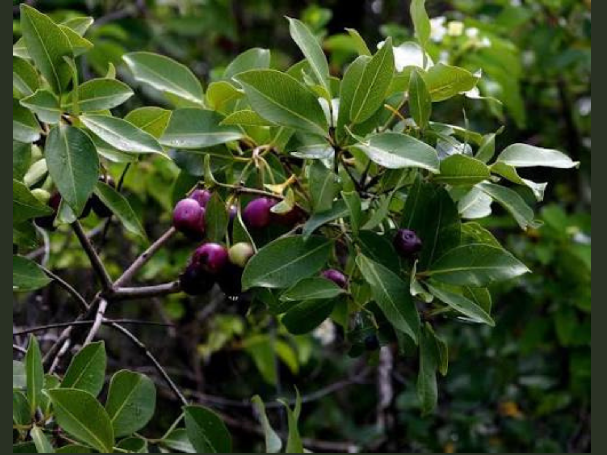
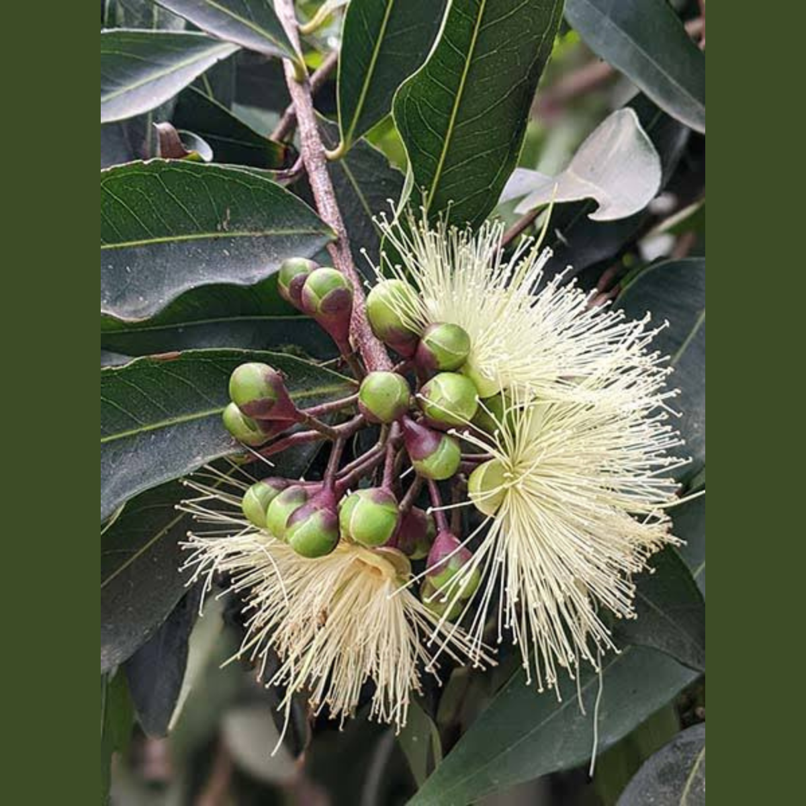
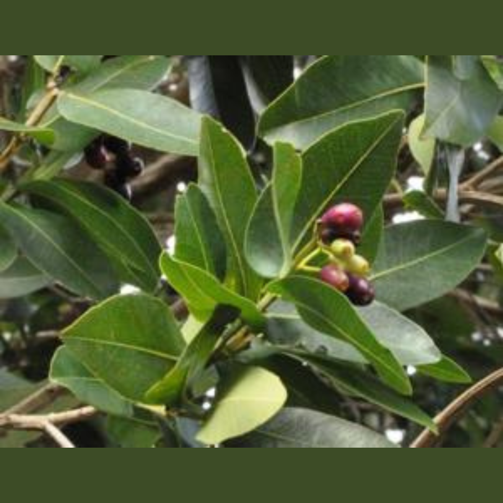

About this plant
Rose Apple is an evergreen fruit tree valued for its edible fruits, dense foliage and usefulness in gardens, farms and conservation landscapes.
- Common name
- Rose Apple
- Local name
- Zambarau (Kikuyu)
- Botanical name
- Syzygium guineense
- Family
- Myrtaceae
Uses
Food
The fruits are eaten fresh and may also be processed into beverages and vinegar.
Traditional knowledge
The bark and leaves have been used in traditional preparations for diarrhoea, malaria and abdominal pain.
Health information: These are recorded traditional uses. They are not a recommendation for treating illness and do not replace professional medical care.
Other uses
The wood may be used for timber and fuel, while the tree can contribute to agroforestry, shade and environmental conservation.
Planting details
Mount Kenya University 29th Graduation Commemoration Tree. Planted on 7 August 2026 at Happy Valley Graduation Pavilion.
More photographs


